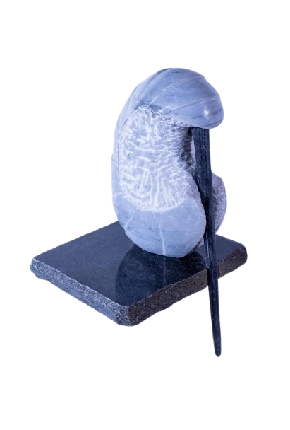
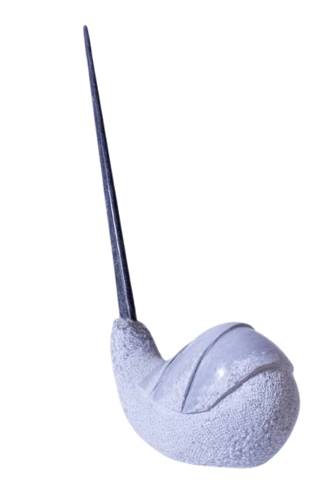
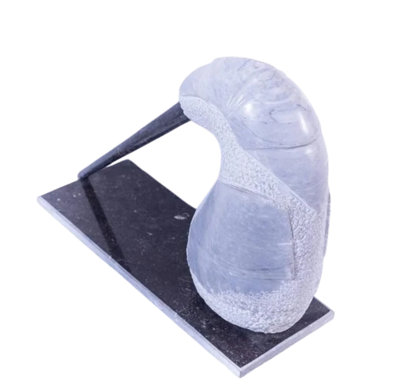
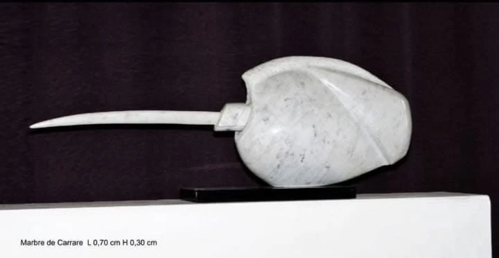
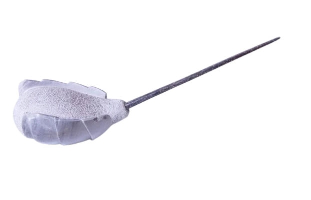
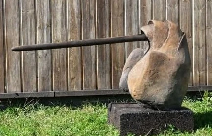
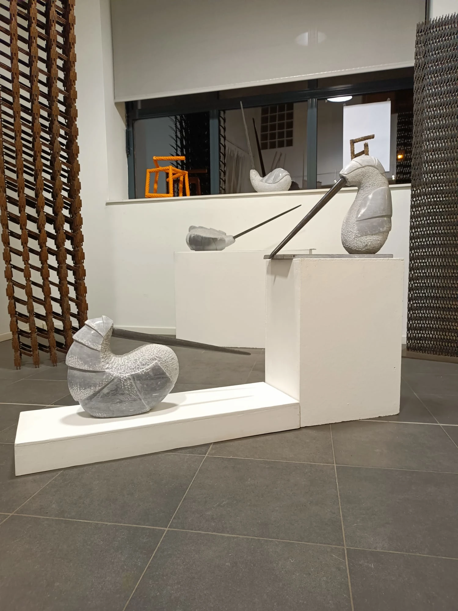
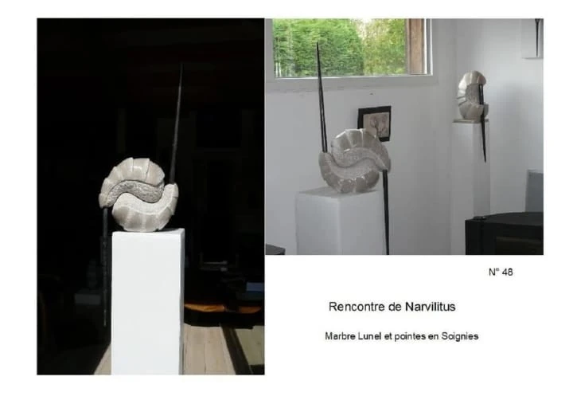
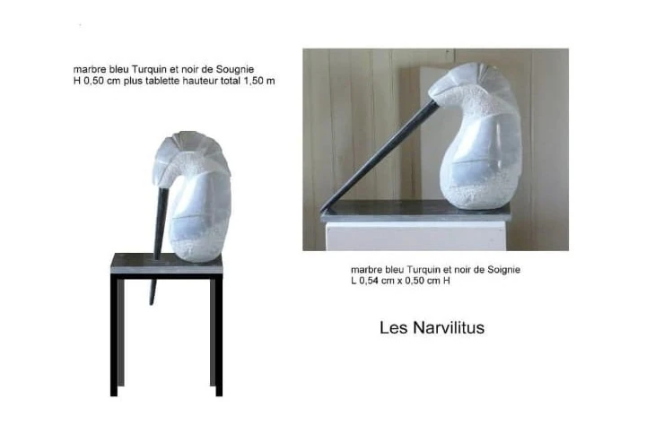

Narvilitus n°1 : marbre bleu Turquin et Soignies. H 0.45m + pointe = L 0.78m
Narvilitus n°2 : marbre bleu Turquin et Soignies. H 0.70m L 0.50m
Narvilitus n°3 : marbre bleu Turquin et Soignies. H 0.50m L 0.65m
Narvilitus n°4 : marbre de Carrare. H 0.30m + pointe = L 0.78m
Narvilitus n°5 : marbre bleu Turquin et Soignies. L 0.80m avec pointe H 0.22m
Narvilitus n°6 : matériau voile de béton coloré. H 0.40m L 1.40 pointe L 0.50m
Narvilitus n°7 : marbre bleu Turquin. H 0.37m L 0.42m. Pointe en Soignies L 0.59m
Narvilitus n°8 : marbre Lunel. H 0.50m L 0.35m. 2 pointes en Soignies L 0.60m
Narvilitus n°9 : marbre bleu Turquin et Soignies. H 0.50m L 0.65m
